日本のコンテンツを世界へ
コンテンツの海外での販売・資金調達を支援し、クリエイターの創作環境を整備して生涯にわたって創作活動を続けられるよう取り組みます。
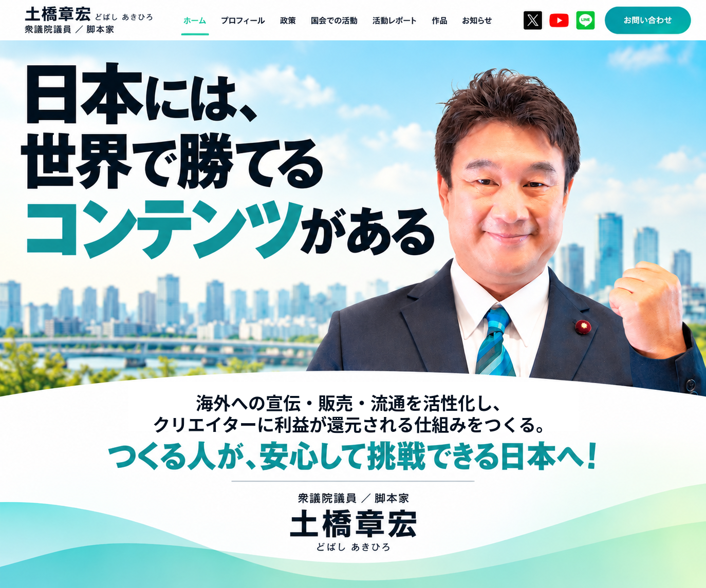
コンテンツの海外での販売・資金調達を支援し、クリエイターの創作環境を整備して生涯にわたって創作活動を続けられるよう取り組みます。
AI時代に必要な電力を安定的に確保し、国民生活と産業競争力を両立させる、現実的なエネルギー政策の実現を目指します。
子どもの愛着形成を大切にした保育環境や、特別養護老人ホームの充実を図り、誰もが孤立せず、安心して暮らせる社会を目指します。
衆議院議員／脚本家
二人の子育てと両親の介護に奮闘中。
国会での質疑や政策議論、研究・地域の現場での活動をご紹介します。
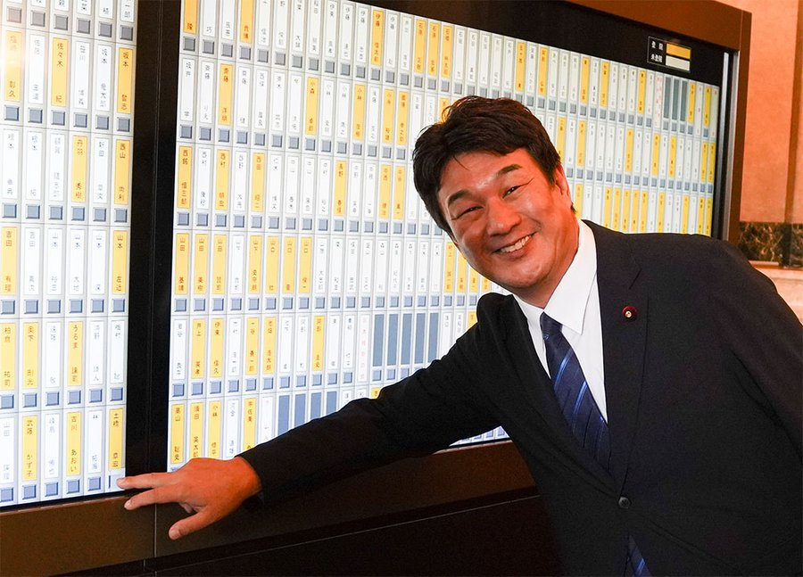
外務委員会、消費者問題に関する特別委員会、国家基本政策委員会に所属。
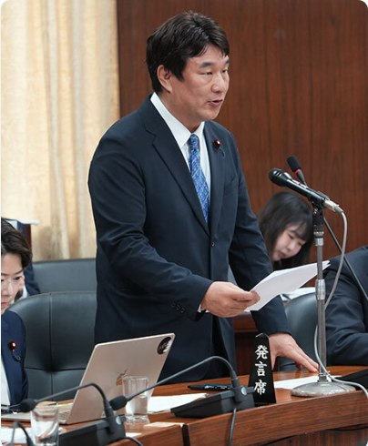
ODA・JICAの戦略的活用や、在外公館の役割強化などを取り上げました。
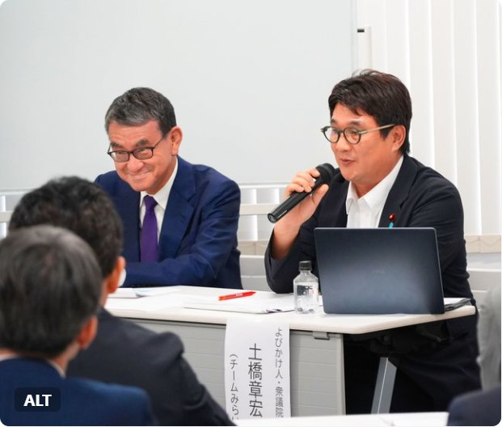
超党派「シン・社会保障国民会議」のシンポジウムに登壇。
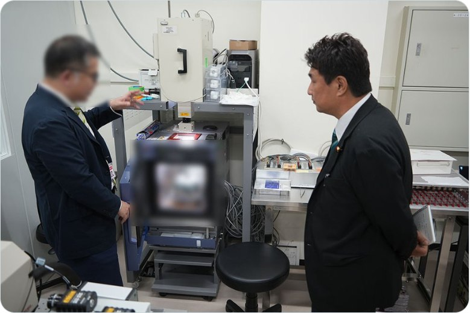
産総研で次世代太陽電池の研究開発現場を視察しました。
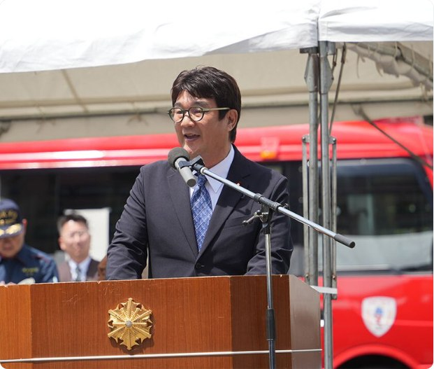
浅草消防団の活動を視察し、地域防災の現場に触れました。
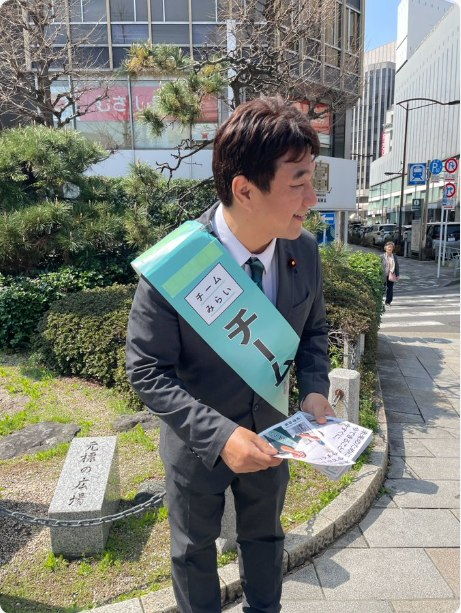
浅草・日本橋などで活動を報告し、地域の声を伺いました。
国内外の視察で得た学びを、写真とともにお届けします。
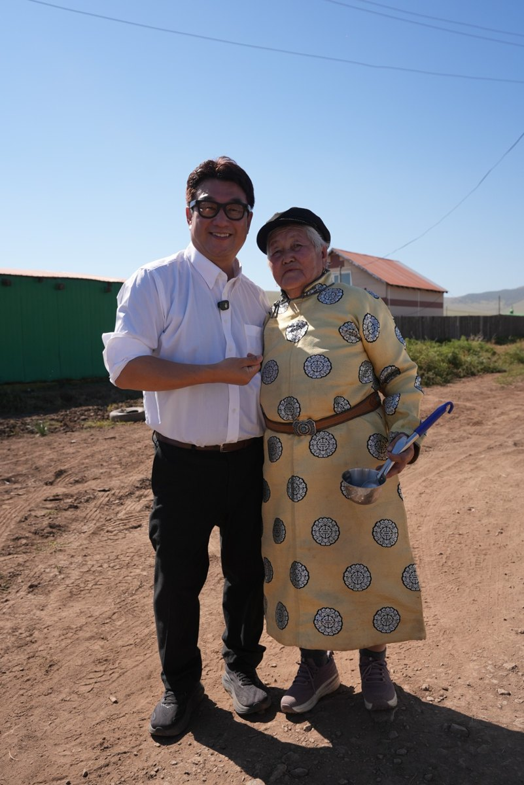
現地の暮らしや地域の課題について、直接話を伺いました。
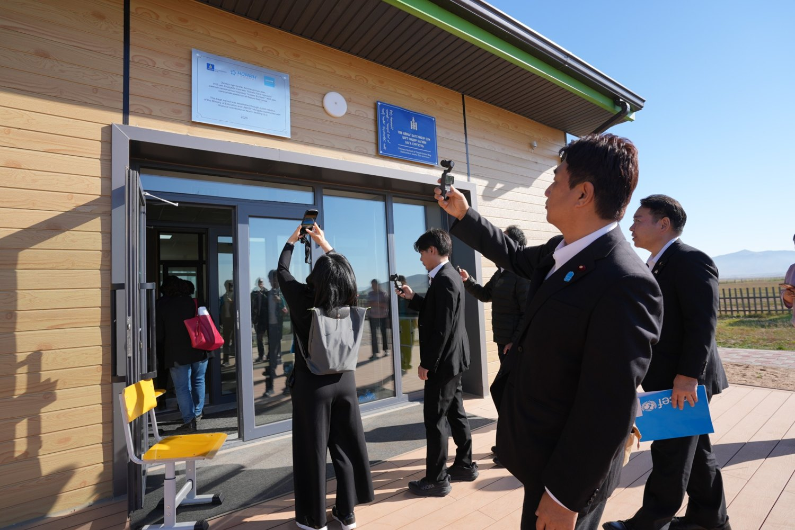
子どもたちの教育環境や支援の現場を訪れました。
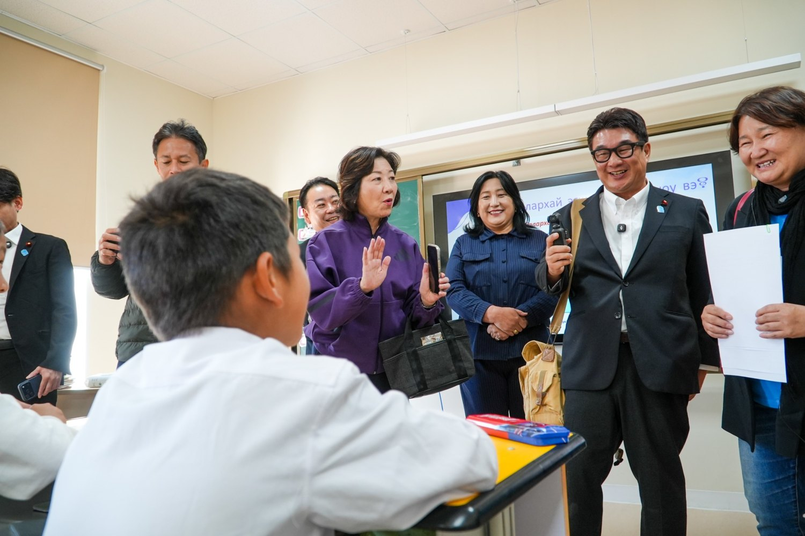
現地の教育・福祉に関する取り組みを視察しました。
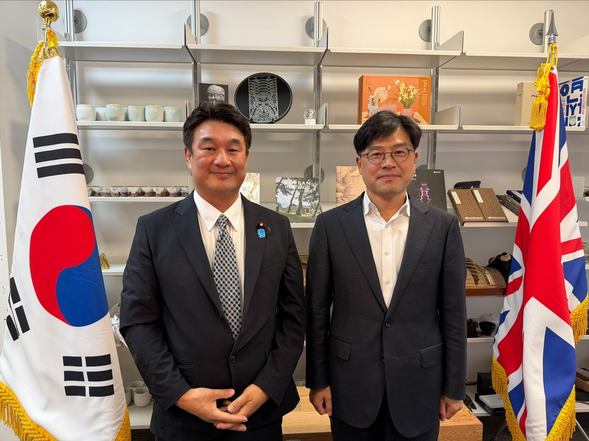
文化産業の海外展開に向けた意見交換を行いました。
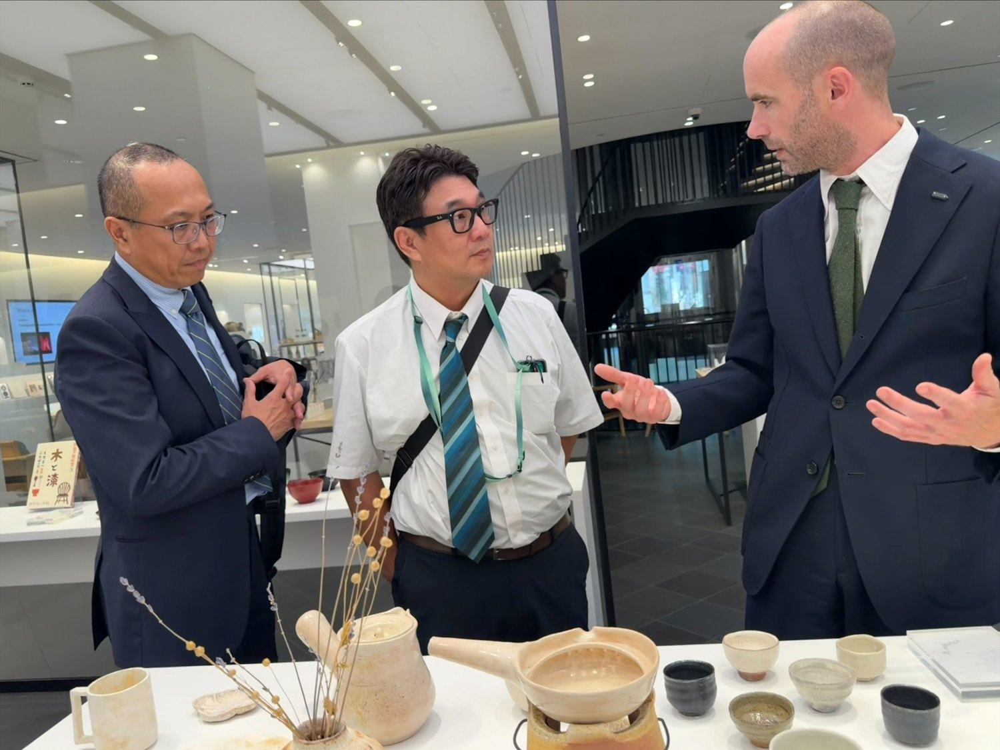
海外での文化発信や流通の現場を訪れました。
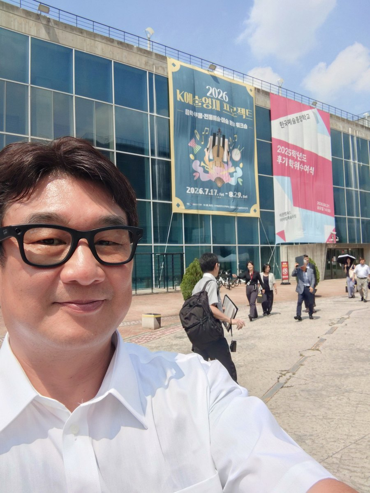
韓国で芸術教育やコンテンツ産業の取り組みを調査しました。
脚本を手がけた映画作品をご紹介します。
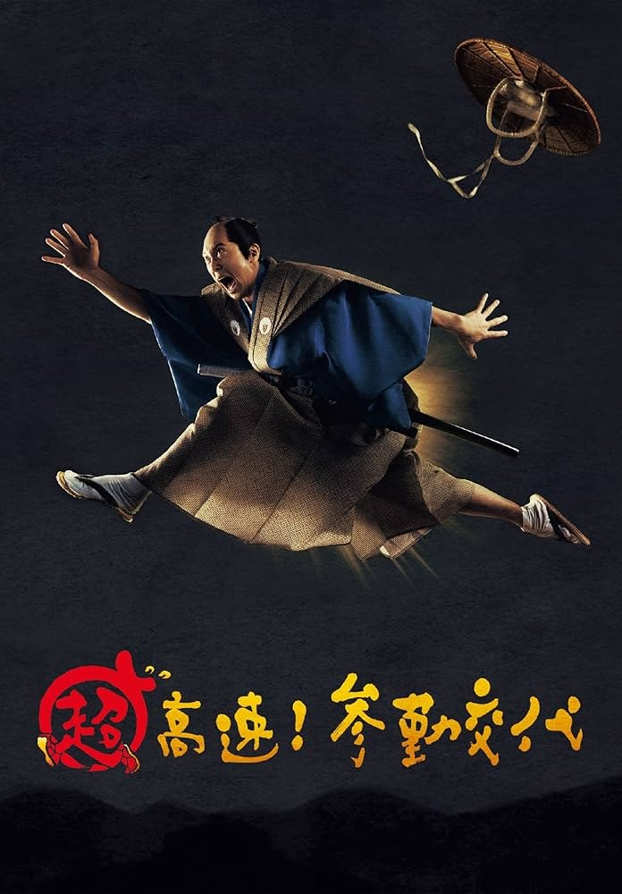
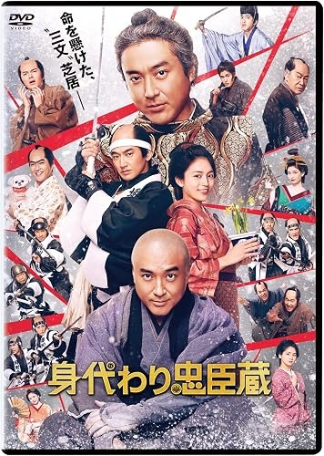